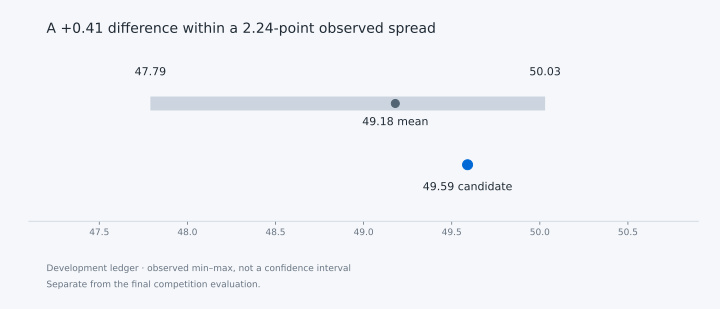

Conquer Health
가중치를 바꿀 수 없는 의료 모델에서, 근거 전달과 답변 완결성을 개선하는 실험.
근거 조회부터,
완결된 답변까지.
- 01의료 질문
- 02필요한 근거 조회
- 03본문을 생성 입력에 전달
- 04답변의 근거·완결성 검수
HealthBench 벤치마크 1위
프로젝트 한눈에 보기
루닛 의료 AI 해커톤 / AIM 팀 5인
- 직접 담당
- MCP 문서 조회·본문 전달, 초기 안전 게이트, 출력 예산 실험
- 최종 평가
- 14개 팀 중 1위 · 벤치마크상
- 팀 평균
- 46.51점 · 최종 3라운드
- 개선 범위
- 제공 모델의 응답 흐름 · 가중치 변경 없음
- 사용 기술
- PythonFastAPIMCPL2-preview
프로젝트 소개
제공 모델의 응답 흐름을 개선한 의료 AI 해커톤입니다.
- 조회 결과관련 문서가 반환되는가
- 생성 입력문서 본문이 실제 입력에 포함되는가
- 최종 답변요구사항·근거·응답 끝부분이 남는가
루닛이 제공한 L2-preview의 가중치를 바꾸지 않고 의료 질의응답을 개선하는 해커톤이었습니다. 검색 도구를 더 붙이거나 출력량을 늘리는 것만으로는 질문의 요구를 빠짐없이 다루고 근거를 사용하는 답변을 보장할 수 없었습니다.
저는 초기 MCP 검색·본문 전달·약물 안전 게이트를 구현하고 출력 예산과 멀티턴 지시를 실험했습니다. 먼저 조회 → 모델 입력 → 생성 → 후처리로 흐름을 나눠, 정보가 어디서 빠지는지 확인했습니다.
난제 1 · 근거를 답변까지 연결
검색에 성공한 근거를 최종 답변까지 전달하려면?
- 무엇이 어려웠나
- 모델 가중치를 바꿀 수 없는 조건에서 검색·입력 구성·응답 흐름을 개선해야 했습니다. 문서 목록 탐색에서 멈추거나 수집 뒤 빈 선택을 반환하면, 도구를 호출하고도 본문 근거가 생성 단계에 도달하지 못했습니다.
- 왜 이 방법을 선택했나
- 검색·생성 사이에서 실제로 전달되는 본문을 확인하고, 목록 탐색 종료와 빈 선택을 복구하는 경로를 구성했습니다. 초기 MCP 연결과 본문 전달을 제 구현 범위로 삼았습니다.
해결 과정
- 목록만 보고 종료본문 조회를 한 번 더 유도
- 수집했지만 빈 선택수집한 근거로 복구하고 미확보 항목도 전달
- 생성에 근거 전달존재하지 않는 인용 ID는 제외
MCP 모델이 문서 목록만 본 뒤 검색을 끝내거나, 근거를 수집하고도 빈 선택 결과를 반환하는 경로를 확인했습니다. 목록 탐색만으로 종료하면 본문 조회를 한 번 더 유도하고, 수집된 근거가 있는데 최종 선택이 비면 수집분으로 복구하도록 검색·생성 연결을 보완했습니다.
팀은 직접 생성 기준선을 확인한 뒤 한국어 약가·허가·성분·질병 코드처럼 조회가 필요한 질문에 도구 사용을 제한하는 방향을 검토했습니다. 초기 연결과 본문 전달은 제 기여이며, 최종 선택적 조회·긴 답변 보존은 팀 제출안의 개선입니다.
도구 사용 횟수보다 필요한 정보가 최종 답변까지 살아 있는지가 중요했습니다. 기능을 추가한 위치뿐 아니라 정보가 사라지는 경계까지 확인하게 됐습니다.
난제 2 · 개선 여부의 판단
평가 점수가 흔들릴 때, 무엇을 개선이라고 판단할 것인가?
- 무엇이 어려웠나
- 같은 서빙 동작의 반복 평가에서도 기준선 점수가 47.79–50.03으로 달랐습니다. 답변 잘림을 줄이려는 설정 변경의 점수가 높아져도, 변경 효과인지 반복 변동인지 구분해야 했습니다.
- 왜 이 방법을 선택했나
- 서버의 허용 상한과 요청 출력 예산을 구분해 조정하고, 후보 점수를 한 번의 기준 점수가 아닌 반복 기록과 대조했습니다.
해결 과정

답변 잘림과 재생성 경로를 줄이려는 후보 e6de327에서 서버 상한을 2,048→32,768로 정정하고, 실제 요청 출력 예산은 2,048→4,096토큰으로 늘렸습니다. 서버가 허용하는 상한과 요청이 사용하는 예산을 구분해 설정을 확인했습니다.
후보는 49.59점, 기준선 3회 평균은 49.18점이었습니다. 차이는 +0.41점이지만 기준선 반복은 47.79–50.03, 2.24점 폭으로 달랐습니다. 이 결과만으로 토큰 상향의 개선 효과를 주장하지 않았습니다.
수치와 설정을 남기고, 잘림·폴백·지연·답변 완결성을 함께 확인해야 한다는 평가 기준을 정리했습니다. 최종 대회 점수와 이 개발 실험은 별개입니다.
가장 높은 한 번의 점수를 고르는 대신, 기준선 변동 안에서 설명 가능한 변화인지 먼저 확인했습니다. 변경 내용과 관측 결과, 그 결과로 내릴 수 있는 결론을 따로 기록하는 습관을 얻었습니다.
결과와 배운 점
팀 벤치마크 1위, 그리고 개선을 판단하는 기준.
AIM 팀은 루닛 Conquer Health의 HealthBench 기반 최종 평가에서 14개 팀 중 1위로 벤치마크상을 받았습니다. 최종 3라운드 평균은 46.51점입니다. 이는 팀 공동 성과이며 MCP나 출력 예산 하나의 효과로 해석하지 않습니다.
MCP를 연결했다는 사실이나 더 긴 답변을 생성했다는 사실만으로 품질 개선을 설명할 수 없었습니다. 제어할 수 있는 설정을 나누고, 실제 입력과 응답을 확인하며, 반복 변동과 팀 변경을 구분하는 실험 태도를 배웠습니다.
| 평가 | 점수 |
|---|---|
| Round 1 | 46.17 |
| Round 2 | 45.55 |
| Round 3 | 47.82 |
| 평균 | 46.51 |
개발 대시보드 점수와 다른 이유
개발 장부의 54.37점과 마감 대시보드의 53.53점은 최종 3라운드 평가와 별도 기록입니다. 모델 서버 상태와 누적 변경이 함께 달라진 실험도 있어, 서로 다른 기록을 단일 개선율로 계산하지 않았습니다. 상장은 수상 증빙이며 숫자 점수를 기재하지 않습니다.

코드와 근거
구현과 판단의 근거를 함께 남깁니다.
Python / FastAPI / MCP / L2-preview / Docker
2026.11.03 검토 · 개인 기여와 팀 성과, 완료한 실험과 진행 중인 연구를 구분했습니다.